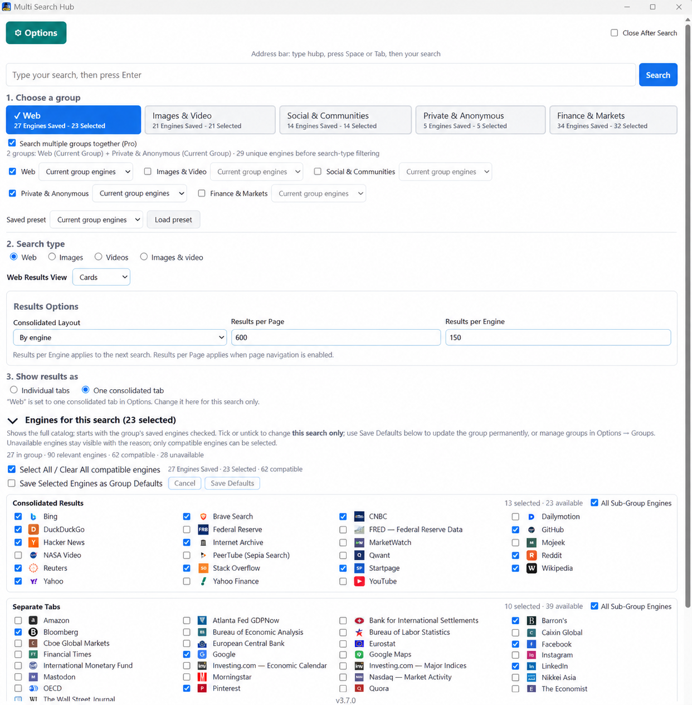
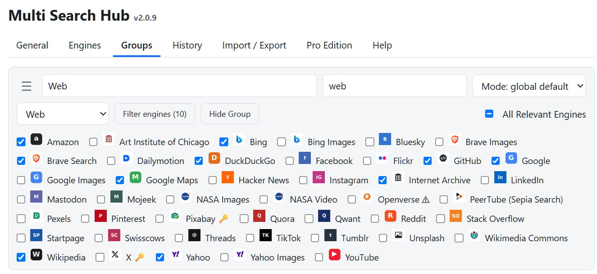
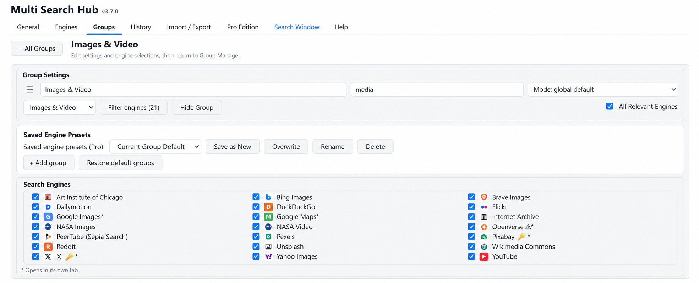
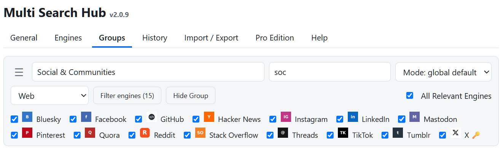
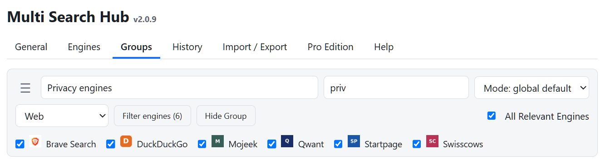
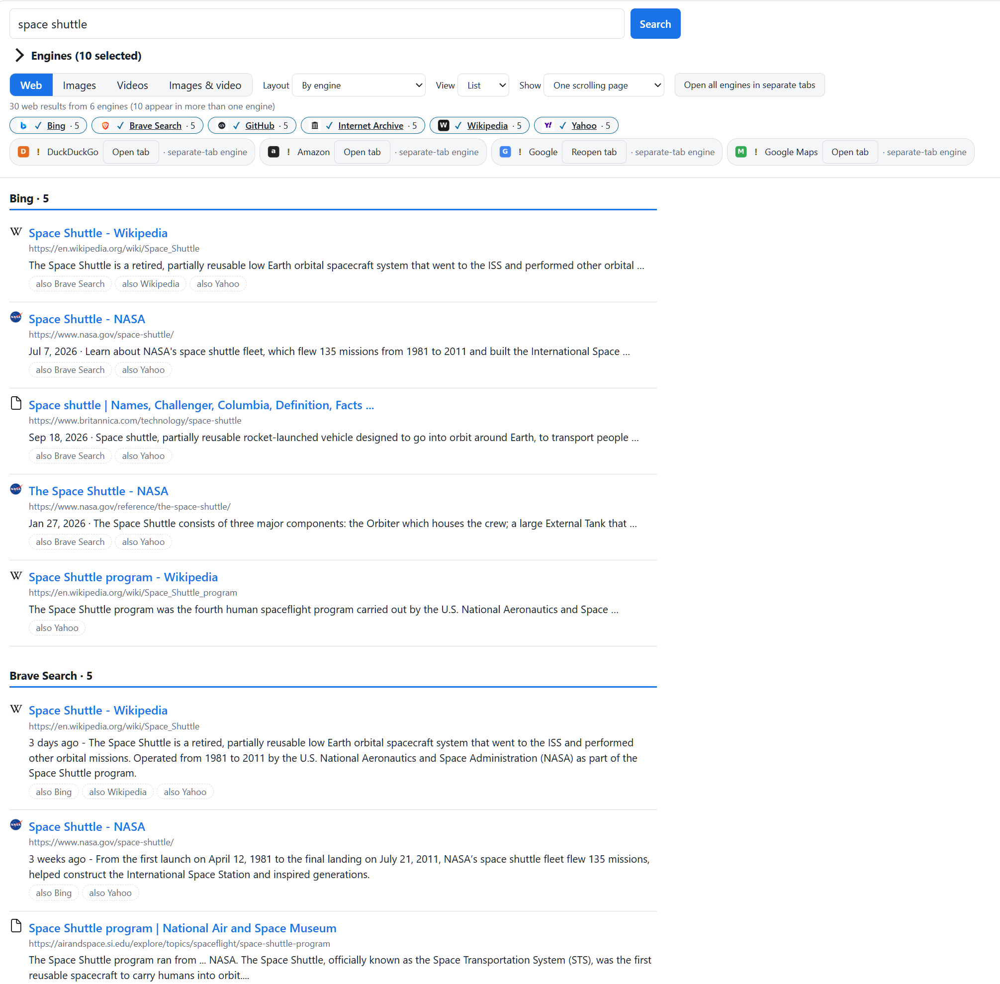
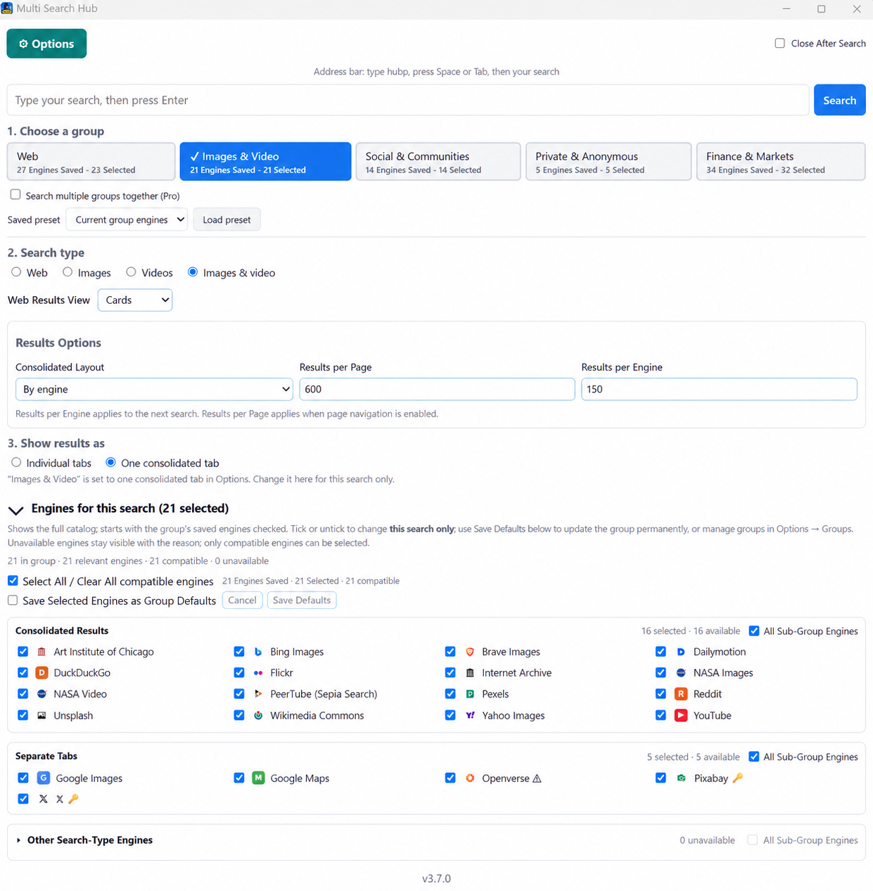
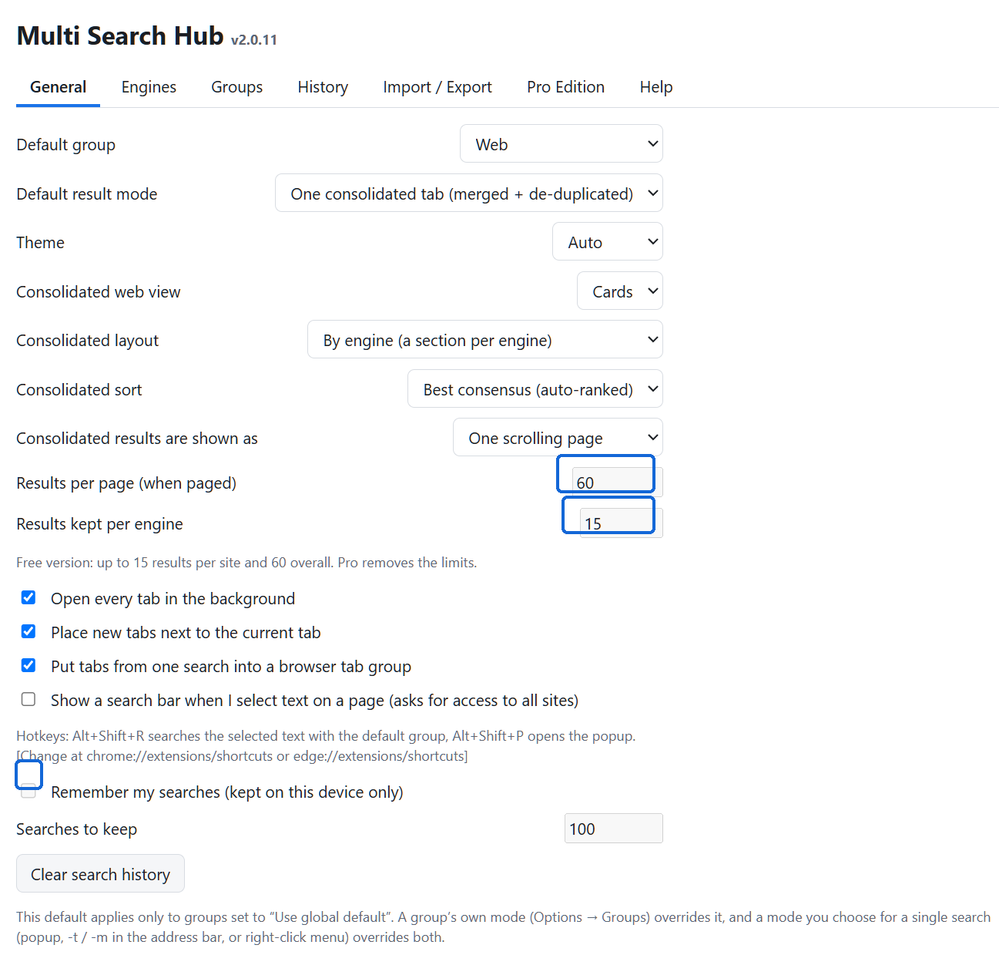
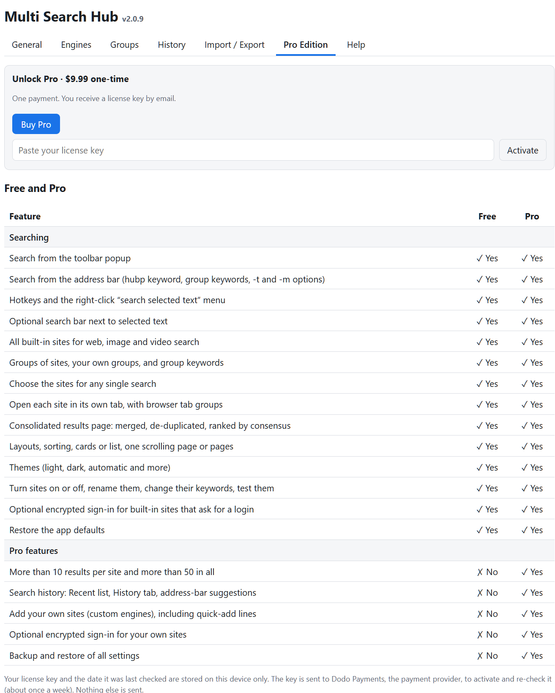
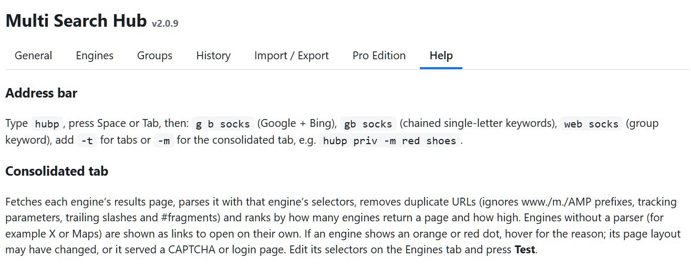

Getting started
Multi Search Hub lets you search several websites at once, keep search engines organized by group, and see supported results together. Free and Pro use the same extension; Pro is an optional $9.99 one-time upgrade.
- Pin Multi Search Hub from the browser Extensions menu.
- Click its icon to open the search window.
- Choose a group and search type, enter a phrase, then click Search.

Select groups and engines
Web lists the complete search engine catalog; specialist groups list engines relevant to their purpose. The checked selections are the defaults for that group. Use the Engines for this search panel in the SSW to change sources for one search without changing the saved group.




Read search results
Choose One consolidated tab to see supported engines on one page. With By engine, each engine has its own section; alternative layouts can combine or de-duplicate matching URLs. Engines that require a separate tab remain labeled as such.
Free results limits: up to 15 results per engine and 60 results total in consolidated searches. Pro allows adjustable higher limits.


Set your preferences
Under General, both editions can choose the default group, display theme, results layout, sorting, and browser tab behavior. In Free, the three marked controls below are locked. Pro removes these restrictions and enables optional search history.

What the $9.99 one-time Pro upgrade unlocks
| Feature | Free | Pro |
|---|---|---|
| Results per engine | Maximum 15 (locked) | Higher adjustable limit |
| Total consolidated results | Maximum 60 (locked) | Higher adjustable limit |
| Remember searches and search history | Off and locked | Optional and configurable |
| Master password and saved website sign-ins | Unavailable | Available |
| Adding custom search engines | Unavailable | Available |
| Creating additional groups | Unavailable | Available |
| Settings JSON backup and restore | Unavailable | Available |
| Quick-add search engines | Unavailable | Available |
Disabled controls remain visible in Free so you can see which settings the Pro upgrade unlocks. Existing built-in engines and groups are still available for Free searches.
Upgrade to Pro
Free includes built-in search engines, predefined groups and consolidated results. The one-time Pro upgrade removes the result caps and unlocks history, passwords, custom engines, custom groups, and backup/restore features.
Go to Options → Pro Edition. Select Buy Pro for the one-time $9.99 purchase, or paste an existing license key and select Activate. Payment and licensing are handled by Dodo Payments.

Pro adds higher result limits, history, custom engines, saved credentials for custom engines, and settings backup/restore. See the Pro guide.
Shortcuts and support
Use Alt+Shift+P for the popup, Alt+Shift+R to search selected text with the default group, or type hub in the address bar followed by Space/Tab to invoke keyword search. Shortcuts can be changed in your browser’s extension shortcut settings.
